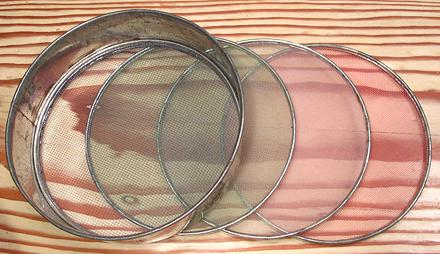

Sieve Set

A set of sieves like this one is very useful where material is pounded
in a mortar or on a stone and a specific grain size is desired. After
pounding, the material is sieved, and that which doesn't fall through
goes back to be pounded more. This set was purchased from an Armenian
market in Los Angeles about 40 years ago, and a similar set may be pretty
difficult to find in North America today. Many sieve sets are available,
but they are "soil sieves", and far too coarse for culinary use.
ke_sievetz 220304 - www.clovegarden.com
©Andrew Grygus - agryg@clovegaden.com
Photos on this
page not otherwise credited are © cg1 -
Linking to and non-commercial use of this page permitted